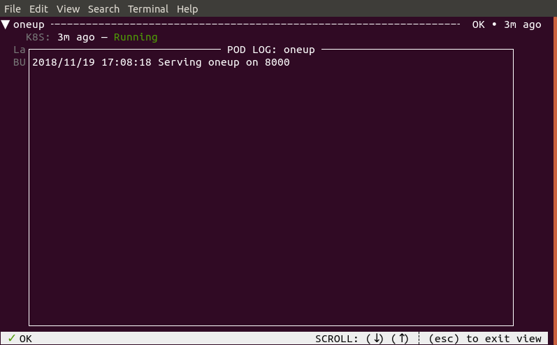

Running your First Tilt Project¶
Prerequisites¶
For this tutorial, you should have:
- Installed
tilt - Configured
kubectlfor a local cluster
To double-check, run:
$ tilt version
v0.4.3-dev, built 2019-01-10
$ kubectl config current-context
docker-for-desktop
If the cluster is NOT ``docker-for-desktop,docker-desktop, orminikube`,
see the FAQ on
how to change your cluster.
This example will only work with these local clusters.
Starting One Server¶
For your first Tilt project, let’s not worry about configuring a project just
yet. Let’s look at a simple existing project and see how easy it is to tilt up and go.
First, check out the Tilt repo.
git clone https://github.com/windmilleng/tilt
cd tilt/integration/oneup
Under integration, Tilt has example projects that we use to run our integration tests.
We’ll be looking at the oneup project
in integration/oneup.
In the oneup directory, run
tilt up
Your terminal will turn into a status box that lets you watch your server come up. When it’s ready, you will see the status icon turn green. The logs in the botton pane will display “Serving oneup on container port 8000.”

Type b to open oneup in a browser window.
Your browser will open http://localhost:8100.
You should see the text 🍄 One-Up! 🍄.
Congratulations! You’ve run your first server with tilt.
Type q to quit the status box. When you’re finished, run
tilt down
to turn off the server.
Troubleshooting¶
If any of the examples in this tutorial didn’t work for you, see the Troubleshooting FAQ.
Next Steps¶
How did Tilt know how to build the server?
How did it get into the Kubernetes cluster?
How did it start listening on localhost:8100?
In the next guide, we’ll answer these questions while you learn how to configure your own project with Tilt.